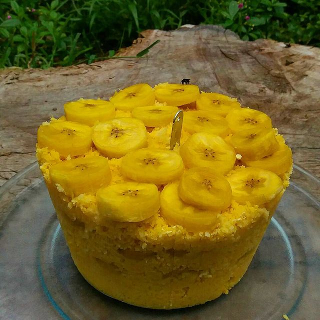

Cuscuz

Descriçao
Um clássico do Nordeste, apesar de ser uma comida tipica do Brasil, o cuscuz foi criado em Maghreb na Africa!
Ingredientes (rende 6 porçoes)
- 3 xícaras de chá de fubá de milho
- 2 bananas da terra cortadas em rodelas
- 1 pitada de sal
- 1 xícara de água filtrada
- 1 colher de chá de açúcar
Passo a Passo
Tempo de preparo: 25m
- Junte o fubá com o açúcar, o sal e a água.
- Misture até que fique homogêneo e deixe descansar por 15 minutos.
- Em uma cuscuzeira (panela apropriada para cozinhar o cuscuz) coloque metade da massa de fubá.
- Acrescente uma camada de banana da terra.
- Coloque a outra metade da massa de fubá e finalize com uma camada de banana.
- Leve ao fogo médio e espere até que a banana esteja cozida.
- Sirva quente.